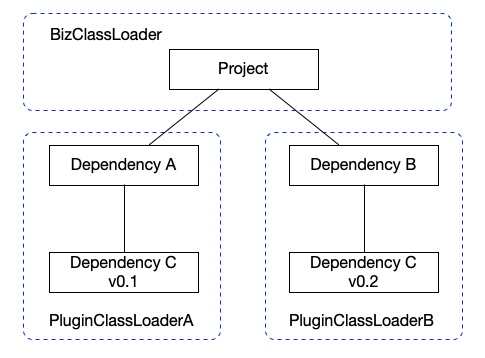

什么是类隔离技术
只要你 Java 代码写的足够多，就一定出现这种情况：系统新引入了一个中间件的 jar 包，编译的时候一切正常，一运行就报错：java.lang.NoSuchMethodError，然后就哼哧哼哧的开始谷歌找解决方法，最后在几百个依赖包里面找的眼睛都快瞎了才找到冲突的 jar，把问题解决之后就开始吐槽中间件为啥搞那么多不同版本的 jar，写代码五分钟，排包排了一整天。
上面这种情况就是 Java 开发过程中常见的情况，原因也很简单，不同 jar 包依赖了某些通用 jar 包（如日志组件）的版本不一样，编译的时候没问题，到了运行时就会因为加载的类跟预期不符合导致报错。举个例子：A 和 B 分别依赖了 C 的 v1 和 v2 版本，v2 版本的 Log 类比 v1 版本新增了 error 方法，现在工程里面同时引入了 A、B 两个 jar 包，以及 C 的 v0.1、v0.2 版本，打包的时候 maven 只能选择一个 C 的版本，假设选择了 v1 版本。到了运行的时候，默认情况下一个项目的所有类都是用同一个类加载器加载的，所以不管你依赖了多少个版本的 C，最终只会有一个版本的 C 被加载到 JVM 中。当 B 要去访问 Log.error，就会发现 Log 压根就没有 error 方法，然后就抛异常java.lang.NoSuchMethodError。这就是类冲突的一个典型案例。
类冲突的问题如果版本是向下兼容的其实很好解决，把低版本的排除掉就完事了。但要是遇到版本不向下兼容的那就陷入了“救妈妈还是救女朋友”的两难处境了。
为了避免两难选择，有人就提出了类隔离技术来解决类冲突的问题。类隔离的原理也很简单，就是让每个模块使用独立的类加载器来加载，这样不同模块之间的依赖就不会互相影响。如下图所示，不同的模块用不同的类加载器加载。为什么这样做就能解决类冲突呢？这里用到了 Java 的一个机制：不同类加载器加载的类在 JVM 看来是两个不同的类，因为在 JVM 中一个类的唯一标识是类加载器+类名。通过这种方式我们就能够同时加载 C 的两个不同版本的类，即使它类名是一样的。注意，这里类加载器指的是类加载器的实例，并不是一定要定义两个不同类加载器，例如图中的 PluginClassLoaderA 和 PluginClassLoaderB 可以是同一个类加载器的不同实例。

如何实现类隔离
前面我们提到类隔离就是让不同模块的 jar 包用不同的类加载器加载，要做到这一点，就需要让 JVM 能够使用自定义的类加载器加载我们写的类以及其关联的类。
那么如何实现呢？一个很简单的做法就是 JVM 提供一个全局类加载器的设置接口，这样我们直接替换全局类加载器就行了，但是这样无法解决多个自定义类加载器同时存在的问题。
实际上 JVM 提供了一种非常简单有效的方式，我把它称为类加载传导规则：JVM 会选择当前类的类加载器来加载所有该类的引用的类。例如我们定义了 TestA 和 TestB 两个类，TestA 会引用 TestB，只要我们使用自定义的类加载器加载 TestA，那么在运行时，当 TestA 调用到 TestB 的时候，TestB 也会被 JVM 使用 TestA 的类加载器加载。依次类推，只要是 TestA 及其引用类关联的所有 jar 包的类都会被自定义类加载器加载。通过这种方式，我们只要让模块的 main 方法类使用不同的类加载器加载，那么每个模块的都会是用 main 方法类的类加载器加载的，这样就能让多个模块分别使用不同类加载器。这也是 OSGi 和 SofaArk 能够实现类隔离的核心原理。
了解了类隔离的实现原理之后，我们从重写类加载器开始进行实操。要实现自己的类加载器，首先让自定义的类加载器继承java.lang.ClassLoader，然后重写类加载的方法，这里我们有两个选择，一个是重写findClass(String name)，一个是重写loadClass(String name)。那么到底应该选择哪个？这两者有什么区别？
下面我们分别尝试重写这两个方法来实现自定义类加载器。
重写 findClass
首先我们定义两个类，TestA 会打印自己的类加载器，然后调用 TestB 打印它的类加载器，我们预期是实现重写了 findClass 方法的类加载器 MyClassLoaderParentFirst 能够在加载了 TestA 之后，让 TestB 也自动由 MyClassLoaderParentFirst 来进行加载。
public class TestA {
public static void main(String[] args) {
TestA testA = new TestA();
testA.hello();
}
public void hello() {
System.out.println("TestA: " + this.getClass().getClassLoader());
TestB testB = new TestB();
testB.hello();
}
}
public class TestB {
public void hello() {
System.out.println("TestB: " + this.getClass().getClassLoader());
}
}
然后重写一下 findClass 方法，这个方法先根据文件路径加载 class 文件，然后调用 defineClass 获取 Class 对象。
public class MyClassLoaderParentFirst extends ClassLoader{
private Map<String, String> classPathMap = new HashMap<>();
public MyClassLoaderParentFirst() {
classPathMap.put("com.java.loader.TestA", "/Users/hansong/IdeaProjects/OhMyJava/CodeRepository/target/classes/com/java/loader/TestA.class");
classPathMap.put("com.java.loader.TestB", "/Users/hansong/IdeaProjects/OhMyJava/CodeRepository/target/classes/com/java/loader/TestB.class");
}
// 重写了 findClass 方法
@Override
public Class<?> findClass(String name) throws ClassNotFoundException {
String classPath = classPathMap.get(name);
File file = new File(classPath);
if (!file.exists()) {
throw new ClassNotFoundException();
}
byte[] classBytes = getClassData(file);
if (classBytes == null || classBytes.length == 0) {
throw new ClassNotFoundException();
}
return defineClass(classBytes, 0, classBytes.length);
}
private byte[] getClassData(File file) {
try (InputStream ins = new FileInputStream(file); ByteArrayOutputStream baos = new
ByteArrayOutputStream()) {
byte[] buffer = new byte[4096];
int bytesNumRead = 0;
while ((bytesNumRead = ins.read(buffer)) != -1) {
baos.write(buffer, 0, bytesNumRead);
}
return baos.toByteArray();
} catch (FileNotFoundException e) {
e.printStackTrace();
} catch (IOException e) {
e.printStackTrace();
}
return new byte[] {};
}
}
最后写一个 main 方法调用自定义的类加载器加载 TestA，然后通过反射调用 TestA 的 main 方法打印类加载器的信息。
public class MyTest {
public static void main(String[] args) throws Exception {
MyClassLoaderParentFirst myClassLoaderParentFirst = new MyClassLoaderParentFirst();
Class testAClass = myClassLoaderParentFirst.findClass("com.java.loader.TestA");
Method mainMethod = testAClass.getDeclaredMethod("main", String[].class);
mainMethod.invoke(null, new Object[]{args});
}
执行的结果如下：
TestA: com.java.loader.MyClassLoaderParentFirst@1d44bcfa
TestB: sun.misc.Launcher$AppClassLoader@18b4aac2
执行的结果并没有如我们期待，TestA 确实是 MyClassLoaderParentFirst 加载的，但是 TestB 还是 AppClassLoader 加载的。这是为什么呢？
要回答这个问题，首先是要了解一个类加载的规则：JVM 在触发类加载时调用的是 ClassLoader.loadClass 方法。这个方法的实现了双亲委派：
- 委托给父加载器查询
- 如果父加载器查询不到，就调用 findClass 方法进行加载
明白了这个规则之后，执行的结果的原因就找到了：JVM 确实使用了MyClassLoaderParentFirst 来加载 TestB，但是因为双亲委派的机制，TestB 被委托给了 MyClassLoaderParentFirst 的父加载器 AppClassLoader 进行加载。
你可能还好奇，为什么 MyClassLoaderParentFirst 的父加载器是 AppClassLoader？因为我们定义的 main 方法类默认情况下都是由 JDK 自带的 AppClassLoader 加载的，根据类加载传导规则，main 类引用的 MyClassLoaderParentFirst 也是由加载了 main 类的AppClassLoader 来加载。由于 MyClassLoaderParentFirst 的父类是 ClassLoader，ClassLoader 的默认构造方法会自动设置父加载器的值为 AppClassLoader。
protected ClassLoader() {
this(checkCreateClassLoader(), getSystemClassLoader());
}
重写 loadClass
由于重写 findClass 方法会受到双亲委派机制的影响导致 TestB 被 AppClassLoader 加载，不符合类隔离的目标，所以我们只能重写 loadClass 方法来破坏双亲委派机制。代码如下所示：
public class MyClassLoaderCustom extends ClassLoader {
private ClassLoader jdkClassLoader;
private Map<String, String> classPathMap = new HashMap<>();
public MyClassLoaderCustom(ClassLoader jdkClassLoader) {
this.jdkClassLoader = jdkClassLoader;
classPathMap.put("com.java.loader.TestA", "/Users/hansong/IdeaProjects/OhMyJava/CodeRepository/target/classes/com/java/loader/TestA.class");
classPathMap.put("com.java.loader.TestB", "/Users/hansong/IdeaProjects/OhMyJava/CodeRepository/target/classes/com/java/loader/TestB.class");
}
@Override
protected Class<?> loadClass(String name, boolean resolve) throws ClassNotFoundException {
Class result = null;
try {
//这里要使用 JDK 的类加载器加载 java.lang 包里面的类
result = jdkClassLoader.loadClass(name);
} catch (Exception e) {
//忽略
}
if (result != null) {
return result;
}
String classPath = classPathMap.get(name);
File file = new File(classPath);
if (!file.exists()) {
throw new ClassNotFoundException();
}
byte[] classBytes = getClassData(file);
if (classBytes == null || classBytes.length == 0) {
throw new ClassNotFoundException();
}
return defineClass(classBytes, 0, classBytes.length);
}
private byte[] getClassData(File file) { //省略 }
}
这里注意一点，我们重写了 loadClass 方法也就是意味着所有类包括 java.lang 包里面的类都会通过 MyClassLoaderCustom 进行加载，但类隔离的目标不包括这部分 JDK 自带的类，所以我们用 ExtClassLoader 来加载 JDK 的类，相关的代码就是：result = jdkClassLoader.loadClass(name);
测试代码如下：
public class MyTest {
public static void main(String[] args) throws Exception {
//这里取AppClassLoader的父加载器也就是ExtClassLoader作为MyClassLoaderCustom的jdkClassLoader
MyClassLoaderCustom myClassLoaderCustom = new MyClassLoaderCustom(Thread.currentThread().getContextClassLoader().getParent());
Class testAClass = myClassLoaderCustom.loadClass("com.java.loader.TestA");
Method mainMethod = testAClass.getDeclaredMethod("main", String[].class);
mainMethod.invoke(null, new Object[]{args});
}
}
执行结果如下：
TestA: com.java.loader.MyClassLoaderCustom@1d44bcfa
TestB: com.java.loader.MyClassLoaderCustom@1d44bcfa
可以看到，通过重写了 loadClass 方法，我们成功的让 TestB 也使用MyClassLoaderCustom 加载到了 JVM 中。
总结
类隔离技术是为了解决依赖冲突而诞生的，它通过自定义类加载器破坏双亲委派机制，然后利用类加载传导规则实现了不同模块的类隔离。